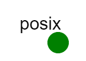

Overview
The purpose of this exercise is to introduce you to filesystem and network access control schemes and the "principle of least privilege" through the use of POSIX filesystem permissions. After this exercise, you will:
- understand the POSIX permissions structure including SUID and SGID bits
- understand the essence of the sudo utility and how to configure and use it securely.
-
be able to apply that knowledge to configure permissions in multiple scenarios, such as:
- shared system directories
- user home directories and private directories
- privileged system directories
- unprivileged temporary directories
- editing important configuration files
- restarting system processes
- potential privilege escalation problems
Required Reading
POSIX Permissions
The Portable Operating System Interface, or POSIX, is IEEE standards family IEEE 1003.1 and represents an attempt to formalize the API for variants of the Unix operating system. POSIX specifies standards for the kernel APIs (including many internal functions like permissions, threads, networking, and interprocess communication), commands, required utilities and user-level APIs (including many utilities and scripting tools like awk, echo, ed, sh, vi, basic I/O, and more), and a conformance test that can be run on many platforms. POSIX is very widely disseminated and has been in use for almost 20 years, but is a closed standard (i.e. proprietary). As a result, it is expensive to be certified; this has resulted in many free operating systems such as FreeBSD and Linux being substantially compliant but not officially able to use the moniker "POSIX Compliant". An alternative to POSIX is the Single UNIX Specification, developed by the Austin Group. Unfortunately, it is also proprietary and expensive. The expense has not been prohibitive for motivated commercial vendors however, and POSIX has been extremely influential in coalescing and standardizing those elements that are characteristically UNIX-like. Furthermore, POSIX is a standard that influences software design and operating system implementations in seemingly unlikely places -- for example, Windows NT and its derivatives (2000, XP, and beyond) can be "POSIX compliant" with the addition of software packages and the enabling of certain features. This broad influence -- existing before the public explosion of the Internet -- has helped to make software and systems similar in fundamental ways. This, in turn, simplifies many portability and interoperability problems. One of the enduring legacies of Bell Labs UNIX and the POSIX standard are traditional Unix file system permissions, which are a simple system of permissions stored in the file system and and kernel and evaluated to mediate access to system resources. Additionally, since devices are files in Unix, file system permissions also mediate control over many aspects of the operating system. In most Unix and Unix-like operating systems, the permission system is extremely simple. Each file has read, write, and execute permissions set for each of three groups of users called "access classes". The three classes are user (owner), group, and other; each access class represents one or more users in the following way:
- Users each have unique user identifiers (userids or UIDs, listed in
/etc/passwd) that only they control. -
Groups are arbitrary collections of users. Each group has its own group identifier (groupid or GID, defined in
/etc/group). Often, every user on the system has a personal group used for sharing data with a limited set of other users.- Example: the
groupclasscdromusually contains a list of all users granted permission to access the system's CD-rom drive. - Example: the user
sonnyhas a groupsonnyby default; the userchercan be added as a member of groupsonnyso that they can share resources between themselves but no one else.
- Example: the
-
Finally, the membership of the
otherclass for each file is dependent on theuserand members of thegroupclass -- theotherclass does not represent "all users!" Specifically, theotherclass represents "everyone that is not theuser(owner) of the file and or a member of the file'sgroupclass." This fact allows us to express more meaningful permissions by strictly dividing all system users into three non-overlapping sets.- A more precise way of stating this is to say that
otherrepresents the the list of all users on the system, minus the union of theuserandgroupclasses. - Example: There are three users on a system:
sonny,cher, anddonovan.sonnyowns a file whose group access class is set to the groupsonny, which contains the usercher. Theotherclass consists only ofdonovan, because he is not the owner nor in the groupsonny.
- A more precise way of stating this is to say that
Each access class is encoded by 3 bits. Each bit present grants an additional permission from the set read, write, and execute. When you list files in long form (with the option -l), you will see the permissions written out in the leftmost column as a bitstring with the letters r, w, and x in the order user, group, and other: Here's what it looks like "in the wild":
$ ls -alh
-rw-r--r-- 1 pahp console 18K May 16 2006 gpl.txt
drwx------ 5 pahp console 512 May 21 2006 john-1.7.2/
lrwxrwxrwx 1 pahp console 25 Sep 13 20:45 labs -> /proj/some/link/
-rwxr--r-- 1 pahp console 171 Sep 9 09:18 loadimage.sh*
drwxrwxrwx 1 pahp console 512 Sep 13 20:45 worldwriteable/
^ ^ ^ ^--- other permissions
| | '------- group permissions
| '---------- user permissions
'------------ file type: d=directory, l=symbolic link, - means regular fileHere's an example bitstring split into components:
d rwx rwx rwx
type user group otherIn the above example, the owner of the file gpl.txt has read and write permission because the owner part of the bitstring is set to rw-. The owner (pahp) cannot execute this file, but that doesn't matter because it's just a text file. The group class console can read the file, as can the members of the other class -- everyone else. The directory john-1.7.2 is only accessible by the owner and nobody else. Notice the d in the first place; this means that the file is a directory. The file labs is a "symbolic link" (sometimes called "soft link") to the directory /proj/some/link/. Symbolic links are a special kind of file that is a pointer to a disk location (a "pathname" which may or may not exist). Permissions on symbolic links do not work as their lrwxrwxrwx permissions might lead you believe. In addition to the 9 bits required to store the user, group, and other permissions of a file, there are three kinds of "additional permissions" that are rarely used but are extremely important to understand. The additional permissions are known as the setuid bit, setgid bit, and sticky bit. Each special bit has a different function depending on where it is used: When the the special bits are used on regular files:
- The setuid bit on an executable file means that the file will run as the userid of the file's owner as opposed to the userid of the user executing the file. This is done to allow users to perform tasks that temporarily require the user to be someone else, such as changing passwords or restarting a service. Any program with the UID bit set must be carefully written so as to block all misuse. Innumerable vulnerabilities have stemmed from setuid root programs with security holes that allowed users to execute other commands as root.
- The setgid bit on an executable file is like the setuid bit, except that the process gains the effective user of the file's group, not its owner or the user executing the file.
- The "sticky bit" was used in the olden days to tell the kernel to keep an executable's image in memory so that it would not have to be reloaded from disk. This was commonly done with programs such as editors that were used regularly but had a significant load time. Modern systems use the "sticky bit" for other uses.
When the special bits are used on directories, they have different meanings altogether. Search online to discover what those meanings are on Linux systems. Every file has permissions of some kind set for the each of the three classes, using the three types of basic permissions: read, write, and execute (and the three special bits). These permissions have a default value (based on the system umask) when the file is created. Permissions can be changed with command line utilities such as chmod and chown, which are discussed later in this document. These permissions are fairly self explanatory when applied to files, but when applied to directories their meanings are not always intuitive. In particular, permissions set on a directory do not always apply to that directory's contents, and the concepts of "read", "write", and "execute" as they pertain to directories is not obvious. (It helps to think of a directory as a file which contains links to other files, rather than as a nested series of containers -- experiment on SPHERE to determine how they really interact!) Furthermore, while the special bits are commonly overlooked, they have important meanings with incredible significance in terms of security. You are encouraged to play with these permissions and read other materials in order to fully understand how they are interpreted.
Criticisms
Traditional Unix permissions date back to the early 1970s. While simple and inexpensive to implement and evaluate, they have long been criticized for being out of date and woefully inexpressive compared to the power of other access control systems. Other systems (such as Microsoft Windows and other ACL models for Unix) have more than three access groups, nested groups, explicit deny lists, the ability to specify write permissions for changing, creating, and deleting (with Unix permissions they are largely the same), the ability to consider arbitrary state in evaluating the ACLs (such as time of day, network address, etc.), the ability to make files invisible to unprivileged users, and many other features that traditional Unix permissions lack. Another important and oft-criticized fact is that Unix permissions do not exactly reflect the current state of the permissions configuration on the system. For example, while Unix checks the file permissions at the moment a file is opened, it only checks those permissions once for each open system call. This means that the permissions are only tested when you first open the file for reading, writing, or executing, not each time you access or modify the file's contents via an open file descriptor. If a user opens a file, and immediately thereafter all permissions on that file for that user are removed, the user with the open file descriptor will still have access to the resource according to the permissions set when the file was opened, even if the current permissions deny reading, writing, or execution. Furthermore, the traditional Unix permissions and authentication system assigns group membership and other credentials at login time and never checks them again -- this means that system password, login permission, group membership details in /etc/group and other details changed after you log in are not reflected in your processes until you log out and log back in or the process with those credentials is restarted. For example, this means that any change to a user group is fully applied only when all affected processes have been restarted. Another example is that if an attacker steals a password and logs in to a system before that account is disabled or the password is changed, the attacker will still have that level of authentication until he or she logs out.
These design decisions were made to limit the space occupied by and CPU cycles spent evaluating system permissions. As long as the semantics of the system (including the above criticisms) are fully understood, it can be an effective, acceptably secure solution for many purposes. In fact, in some ways, its simplicity and even naivete make it more transparent and easily understandable when compared to more complex systems. For these and many other reasons, the traditional Unix file permissions are still in wide use, over 40 years after their initial deployment.
sudo and Alternatives
Some applications simply require stronger guarantees, finer granularity, or other features that the traditional permissions cannot express. For those applications, users have many alternatives. sudo is one simple extension to traditional Unix permissions that has become very popular. sudo is a setuid root application with its own ACL (stored in /etc/sudoers) that specifies, with fine granularity, tasks that users and groups can perform as root. For example, sudo could be used to allow a user to act as root in order to kill processes with a specific name. The user would otherwise have no additional privileges. This is an example of a perfect use for setuid root programs -- granting strongly-constrained privileges to unprivileged users. However, sudo is a double edged sword. On the one hand, it greatly enhances the expressiveness of Unix permissions without actually changing the permissions system. On the other hand, if improperly configured, it offers easy access to root. For more information on sudo and the sudoers ACL format, please see the manpages for sudo and sudoers (the configuration file), or other sudo-related material online (in particular regarding sudo exploits). Beyond sudo, two broader and more revolutionary alternatives for Linux permissions include SELinux and grsecurity, while other options exist including LDAP, Novell eDirectory, and other permissions systems for other operating systems. (We won't be using any of these.)
Software Tools
adduser, chfn, passwd: add users to a system
adduser is the tool available for adding users to the system. To create a new user, execute:
$ adduser usernameadduser will copy files from the /etc/skel directory to become the new homedir of the new user in the /home/ directory. You can specify a different home directory or automatically add the new user to groups; those options can be found in the adduser manpage. adduser does not set any finger information for the user (this is not strictly necessary anyway), but the tool chfn will do that:
$ sudo chfn jimbo
Changing finger information for jimbo.
Name []: ...By default, the user is created with a "locked out" account with no password set. To set the password, use the command passwd:
$ sudo passwd jimbo
Changing password for user jimbo.
New Unix password:
Retype new Unix password:
passwd: all authentication tokens updated successfully.passwd will complain if it doesn't like the password you enter, but will accept anything with enough prodding. Once an account is created, you can log into it in a number of ways:
- If logged in to the system where you created the account, you can execute
ssh newuser@localhostto reconnect locally as the new user with the new password. - If local, you can also use the
sucommandsu newuserto change to that user. This does not always update all access credentials, however. This method can also be used to become root by enteringsudo su -. - If logged in to your XDC, you can ssh to the node as the new user.
groupadd: add groups to a system
groupadd adds a new group to the system with a unique ID (by default). Example:
$ groupadd newgroupSee man groupadd for more information.
usermod: modify a user
usermod can be used to modify many details of a preexisting user account. For more information, see man usermod.
chown, chgrp: change ownership of a file
chown stands for change ownership and is (unsurprisingly) used to change the owner and group of a file. The syntax is very simple. To change the owner of a file, execute:
$ chown newowner filenameTo change the owner and group classes of a file, execute:
$ chown newowner:newgroup filenamechgrp stands for change group and works very similarly to chown. To change the group of a file, execute:
$ chgrp newgroup filenameRecursive and other options exist; see man chown or man chgrp for more information.
chmod: change the mode of a file
chmod stands for change mode and is used to change the permissions mode of a file. Earlier, we discussed how the POSIX ACL has three access classes. User (or owner), group, and other (or world). The permissions mode for each access class can be changed by the chmod command. There are two ways to use chmod; one is an absolute numeric mode and the other is a symbolic mode.
chmod: absolute -- setting the permissions explicitly
In the absolute mode, chmod takes a file mode in 3 or 4 digits, each of which represents the absolute permission mode for one access class expressed in octal, where each number is a sum of the permission bits. Each permission has a unique value: read permission is 4, write permission is 2, and execute permission is 1. These values represent the position of the permission in a 3-bit value. For example, the mode 777 means "full permissions" because all bits are set in each access class. Similarly, 000 means "no permissions" because all bits are unset in each access class. The 3-digit mode 777 is the equivalent to the 4-digit mode 0777 where the leading 0 represents the "special" permission class of setuid, setgid, and sticky. Likewise, the modes 000 and 0000 are equivalent and represent the absence of permission. (The owner of the file and root still have the ability to change the file's mode by virtue of their ownership and superuser status.) Finally, if the 3-digit mode is used, chmod always assumes that the special access class is 0. Therefore, if you set an suid-root file to mode 777, chmod assumes that you meant mode 0777, which would take away the special permissions. This is consistent if you remember that octal modes represent absolute permissions and the special group class is assumed to be 0 if a 3-digit mode is provided. The following is a table to help calculate permission modes:
| chmod absolute values | |||||||||||
| special | user | group | other | ||||||||
| s | g | t | r | w | x | r | w | x | r | w | x |
| 4 | 2 | 1 | 4 | 2 | 1 | 4 | 2 | 1 | 4 | 2 | 1 |
For example, full access is 0777, which represents:
| special | user | group | other | ||||||||
| s | g | t | r | w | x | r | w | x | r | w | x |
| 4 | 2 | 1 | 4 | 2 | 1 | 4 | 2 | 1 | 4 | 2 | 1 |
| 0 | 7 | 7 | 7 | ||||||||
There are no special bits set, so the special octal digit is 0, while all three bits in each other class are set. Each set of bits totals 7 (4 + 2 + 1), so the mode is 0777. Another example is mode 2755, which represents setgid (2), plus "full access" for user (4 + 2 + 1) and write and execute (4 + 1) access for both the group and other class.
| special | user | group | other | ||||||||
| s | g | t | r | w | x | r | w | x | r | w | x |
| 4 | 2 | 1 | 4 | 2 | 1 | 4 | 2 | 1 | 4 | 2 | 1 |
| 2 | 7 | 5 | 5 | ||||||||
Absolute modes are applied like this:
$ chmod 0755 somefile.shAbsolute mode is great for setting things to be exactly what you want, or imposing a radically different order onto a file or directory, but it's not very good for adding the sticky bit to a file. For that kind of work (or if the octal modes just confuse you) the symbolic mode is well suited.
chmod: symbolic -- more user-friendly
The symbolic mode works pretty much the way you would expect. To add the execute bit to the user class, you would execute a command like this:
$ chmod u+x somefile.shOr to add execute to all three classes:
$ chmod ugo+x somefile.shTo make a file setuid:
$ chmod u+s somefile.shTo remove all permissions:
$ chmod ugo-rwxsgt somefile.shSome people are so put off by the absolute mode that they never learn it -- you'll find with experience that both methods of setting permissions can be expeditious depending on the situation. More information is available in the chmod manpage. Regardless of how you set permissions, it is critical that you use the "principle of least privilege" and only grant the privileges that are necessary for proper operation.
Introduction
You are Wilbar Memboob, the Security Administrator of FrobozzCo ("You name it, we make it"). You are looking to hire a new system administrator to replace the guy you just fired -- unfortunately, even though his resume looked great on paper and he interviewed well, once you put him at a console he clearly had no idea what he was doing. To him, proper permissions meant that the application worked; if it was secure then that was just icing on the cake. You should have done something when the other admins starting calling him "Triple-7" -- a.k.a. "wide open". But it was when he changed the company fileserver directory permissions to "ugo+rwx" and the projected budget was "released" early -- including a list of the employees being laid off -- that he signed his own pink slip. To keep this from happening again, you've created a little test for your new applicants to take. Unfortunately, before you can grade the applicants, you need to create an answer key.
Assignment Instructions
In the assignment portion of this exercise, you're going to create an answer key for your "hiring exam." You'll need to swap in your nodes and complete the exercises below.
Setup
- If you don't have an account, follow the instructions here.
-
Create an instance of this exercise by following the instructions here, using
posixas Lab name. Your topology will look like below:
. - After setting up the lab, access your
posixnode.
Changes to SPHERE nodes are lost when the nodes are swapped out. This means that you must manually save your work between working on nodes in order to keep it. However, this exercise includes experimental scripts to help you save and restore your work.
Saving your Work
After completing the POSIX exercises on the posix node, cd into the /root directory and execute the script /root/submit.sh; like this:
$ ./submit.sh...it will make a tarball of all the relevant files and their permissions, including the /root/permissions-answers.txt file. You must copy or move the created tarball into your group directory, otherwise it will be lost upon swapout.
Restoring Your Work
The experimental script /root/restore.sh on the posix node, takes as input the path to a tarball created by submit.sh described above and restores the files to their proper locations on the system. This includes all the files you are asked to create or change in the first part.
To use the restore.sh, copy a tarball created by submit.sh into the /root/ directory and execute this command:
$ ./restore.sh username-permissions-123123123.tar.gzYou will be asked if you want to automatically overwrite files, and if you want to selectively restore some files and not others. The options are self-explanatory. Finally, if you don't trust the scripts, you can always make your own backups into your group directory and restore them by hand if you prefer.
Tasks
Your task is to create an answer key for the following test:
FrobozzCo Permissions
This test is a part of the application process for the administrator position at FrobozzCo. You will be presented with a number of tasks and questions; the tasks must be executed on the posix node of the SPHERE experiment we have created for this purpose (you can use the client node for testing), while the questions must be answered in a plain text file that will be submitted with the results of your tasks. See below for further instructions.
Part 1: POSIX File Permissions and 'sudo'
Instructions
The following section includes a number of permissions and file creation exercises. This test will be performed on a live network testbed with a full complement of standard utilities and editors. In addition, you are fully encouraged to use the Internet, man pages, help screens, and any other resources available to you in the execution and answering of these problems. Please read and use these disambiguation rules for setting the correct permissions. Also, make sure that you test your answers -- POSIX permissions are simple in theory, but in practice many combinations have counterintuitive effects! Your answers will consist of an archive, created by the submit.sh script described above. The archive will contain:
- A copy of your permissions modifications. You will be graded only on the correctness of your answers, not their elegance nor how efficiently you came to them.
- Your written answers to the numbered short answer questions. These should be written in the file
/root/permissions-answers.txton the server system using an editor (such asvim).
See below for instructions on submitting your answers.
Home Directory Security
Your server needs two home directories. Important: We will not be using the /home directory for the users in this lab. Instead, you will be using /emp and also /admins for your team. Normal home directories are private, while the homedirectories in /admins will be publicly viewable and somewhat collaborative.
- Create the
/adminsand/empdirectories. - Create the groups
empandwheel(seeman groupadd). - Create the normal (i.e., non-admin) user accounts
larry,moe, andcurlyusingadduser. You may set the passwords to anything you like. - Add the non-admin accounts to the
empgroup by editing/etc/groupor usingusermod. - Create the admin user accounts
ken,dmr, andbwk-- specifying that the home directory for each admin should be located at/admins/username-- whereusernameisken,dmrorbwk. In other words, admin homedirs are not in/emp. (Seeman adduserfor special homedirectory options.) You may set the passwords to anything you like. - Add the admin accounts to the
wheelgroup by editing/etc/groupor usingusermod. (Ensure that admins are not part of theempgroup.) - add
larry,bwk, anddmrtoken's group. - add
moe,dmr, andkentobwk's group. - add
curly,ken, andbwktodmr's group. - On this system, default permissions for new home directories allow
otherusers (i.e., users that are not theowneror in the specifiedgroup) to read and execute files in the directory. This is too permissive for us. Set the mode on the home directories in/empso thatownercan read, write, and execute,groupcan read and execute andotherhas no permissions. (Set the mode on the homedir only -- do not set it recursively.) - Individual home directories should now be inaccessible to
otherusers. Now, set the permission mode on/empitself so that normal users can't list the contents of/empbut can still access their home directories and so that members of thewheelgroup have full access to the directory (without usingsudo). -
By default, each homedir is owned by its user, and the homedir's group is set to the group named after the user. (For example,
ken's homedir is set token:ken-- i.e.,kenis the owner and the group is set token's group.) Set the permission modes recursively on the individual homedirectories in/admins(seeman chmod) so that:- owners have full access
groupusers (users who are in the group associated with a user's home directory) can read and create files in that homedirotherusers can read and execute any files (unlike the home directories in/emp)- files created by a group member in that homedir should be set to the homedir owner's group. (Hint: Look up what the SUID and SGID bits do on directories.)
- Example:
larryis inken's group.larrycan create files in ken's homedir, and those files are owned bylarry, but are assigned token's group rather thanlarry's group.moe, not inken's group, can only read and execute files. (Note that permissions for normalempuser homedirs are not changed.)
The Ballot Box
All regular employees use this directory to submit votes for "employee of the month".
- Create the
/ballotsdirectory. - Set the permissions on
/ballotsso that it is owned by root and users can write files into the directory but cannot list the contents of the directory. - Furthermore, set it so that members of the
wheelgroup have no access (not including sudo). - Short Answer 1: Is there any way that employees can read the ballots of other users? If so, what could be done to stop this? If not, what prevents them from reading them?
- Short Answer 2: What does the 'x' bit mean when applied to directories?
The TPS Reports Directory
Admin employees submit TPS reports in this partially collaborative directory.
- Create the
/tpsreportsdirectory. - Create the
tpsuser. - Set the permissions on
/tpsreportsso that it is owned bytpsand thattpsand members of thewheelgroup have full access to the directory, but so that no one else has access to the directory. - Furthermore, configure it so that files written into it are still owned by the
wheelgroup, but so that one member ofwheelcannot delete another member's files. - Short Answer 3: Which users on the system can delete arbitrary files in the
/tpsreportsdirectory? - Short Answer 4: Is there any way that non-
wheelemployees can read files in the/tpsreportsdirectory? - Short Answer 5: What do '0' permissions mean for the owner of a directory? What privileges do they have over files in that directory?
sudo: Editing Configuration Files
All members of the wheel group do system administration on the server. Because of this, they all have full sudo access to root privilege with the /etc/sudoers directive '%wheel ALL=(ALL) NOPASSWD: ALL'. The "NOPASSWD" means they don't have to enter a passwd upon sudo invocation. The employee larry is the webmaster for the system, so he has some extra privilege compared to the other employees. For example, larry has sudo access to the command /usr/bin/vim /etc/httpd/conf/httpd.conf ... with the directive
larry ALL=(ALL) /usr/bin/vim /etc/httpd/confs/httpd.conf... so that he can update the configuration of the webserver. Short Answer 6: Is this safe? Why or why not? If it is not safe, is there a better way to give larry this access? If it is safe, how do you know it is safe? (Hint: search online for common sudo issues.)
sudo: Restarting System Processes
As a part of his webmaster duties, larry often requests the wheel group to restart the Apache server with the command '/etc/init.d/httpd restart'. It would make everyone very happy if there was a secure way to let larry restart the Apache server (but not give him any other access). Short Answer 7: Assuming the init script /etc/init.d/httpd has no unknown vulnerabilities, is it safe to grant larry sudo access to the command /etc/init.d/httpd restart? If this is not secure, explain why.
POSIX and sudo: Two Wrongs Make a Much Bigger Wrong
Carefully examine the permissions on the server. Look at /etc/group, /etc/sudoers, and the files in the /admins and /home directories (and their subdirectories). Short Answer 8: Is there some way that moe or curly could subvert this system to gain root privileges? If not, how do you know this is true? Hint: Consider what happens during the UNIX login process -- the time between when the user enters the correct password and when they can interact with their shell.
Tips and Tricks
This section includes important rules and tips for making sure that your answers are correct.
1. Rules for resolving filesystem permission ambiguities:
Permissions should always be set to reflect the least privilege required to fulfill the requirements. In POSIX permissions, every bit set represents less security, so we want to set as few bits as possible. Resolve any ambiguities with this cumulative list of guidelines:
-
Files you are instructed to create are to be owned by
rootunless otherwise specified. Doing the work asrootshould do this automatically. (You can become root by executingsudo su -.)- Exception: Files in homedirs should be owned by the homedir owner (useradd should do this by default for boilerplate files like .bash_login, etc).
-
When setting ownership of a file, set the group class to the same thing as the user (owner) class unless otherwise specified.
- Example: Create the directory
foo. Setwww-dataas the owner offoo. - Answer: Set
www-datato be the user (owner) and group class offoo. - Example: Create the directory
xyzzy. Set the group class towww-data. - Answer: Set the group class to
www-databut the user class should still be set toroot.
- Example: Create the directory
-
Files whose permissions you are not otherwise instructed to change should stay at their default.
- Example: Create directory
baz. Create directoryquuxand set its permissions to be wide open. - Answer: Don't change
baz's file mode. It should be owned by root (as per #1). Setquuxpermissions to0777.
- Example: Create directory
-
For any files whose permissions you are instructed to change, unspecified permissions are always assumed to be 0 (no access). In other words, instructions for setting file permissions implicitly include all access groups (even those not explicitly mentioned).
- Example: Set directory
fooso that its owner has full access. - Answer: The correct mode is
0700, since no group or other permissions were specified and we assume that they are 0.
- Example: Set directory
-
Permissions are assumed to be for all classes unless specified.
- Example: Remove all permissions from
/dev/hdc. - Answer: Set
/dev/hdcto mode000(root still has access of course). - Example: Set read and write permissions on
/etc/motd. - Answer:
/etc/motdshould be set to mode 0666 -- all classes can read and write.
- Example: Remove all permissions from
-
When granting permissions, setuid, setgid, and sticky bits are never granted unless specifically required to solve the problem. These bits are special and must be required by the nature of the question or be otherwise mentioned to be granted.
- Example: Set a directory so that owner has full access and it's group class members can create files in it.
- Answer: The correct mode is
0730because a user (in this case the group user) requires both write and execute to create files. The question didn't specify anything requiring setuid or setgid so they are not enabled. - Note: the
otherclass in this example has no access because the permission is assumed to be0(as per #4). - Note: In #3 above, see that "wide open" for the directory quux meant
0777not4777because setuid was not specified or required.
- If any tasks are not possible with the standard POSIX permissions available in this exercise, explain why.
Submission Instructions
Submit a tarball created by submit.sh to your instructor. You must use a tarball created by this script so that it will correctly save the permissions of the directories.